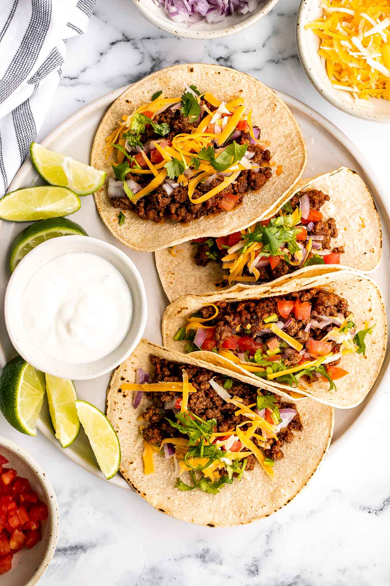

For my work as an engineer, I ve had the chance to travel very often to Mexico and this is where I have learned how to make the best tacos ever.
This started as a very classic tacos recipe, but over the years I ve tweaked it to this masterpiece of a dish. Serve this at a mexican party at your place and you will be stuck to host a mexican party every year after this.